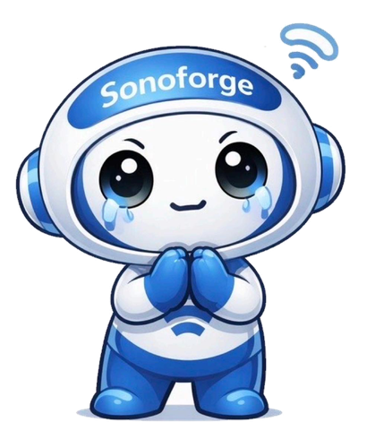

←
STEP 1 — FASTの重要性
なぜFASTが必要なのか？

🤖 ソノボくん
STEP 1 スタートだ！まず「なぜFASTが必要なのか」を知ろう。これだけで学ぶ気が変わるよ！
FASTが重要な理由
外傷死の主原因
外傷による死亡の主原因は
「出血性ショック」だ。
「出血性ショック」だ。
最大の危険
腹腔内出血は外見からわかりにくい。
= 見逃しが命取りになる。
= 見逃しが命取りになる。
FASTの強み
被曝なし・リアルタイム・繰り返し実施できる
スピード
熟練者なら2分以内に完了＠ベッドサイド

🤖 ソノボくん
ここが一番大事なポイント！
頭に焼き付けておいてね🔥
頭に焼き付けておいてね🔥
「出血があるか」を早く判断するほど、救命率は上がる！
FASTはベッドサイドで数分以内に出血の有無を判断できる、唯一の検査だ。
FASTはベッドサイドで数分以内に出血の有無を判断できる、唯一の検査だ。

💡 ポイント
CTは詳しいけど移動・準備・被曝が必要。FASTはその場で即スキャンできるのが強みだよ！

🤖 ソノボくん
じゃあ実際の救急現場を体験しよう！
あなたは研修医としてこの患者さんを担当するよ👩⚕️
あなたは研修医としてこの患者さんを担当するよ👩⚕️
🏥 緊迫の救急現場
🚨 ホットライン入電深夜 — 救急外来
「30代男性、交通事故。意識清明だったが徐々にぐったりしてきています。血圧低下あり。あと5分で到着します。」
救急隊員より
🚨 ソノボくん
「徐々にぐったり」「血圧低下」…赤信号だ！受け入れ準備をしながら診察計画を立てよう。

🤖 ソノボくん
患者さんが搬入された！バイタルと外表をチェックしよう。
搬入時バイタル（0分）
意識 JCS
I — 1
やや傾眠
血圧
90/60
mmHg
脈拍
120
/min
呼吸数
24
/min
SpO₂
98%
酸素投与下
外表所見
右胸部に打撲痕あり
腹部に明らかな外傷なし
大量出血は見えない
「腹部外傷なし・大量出血なし」
→ 一見、そこまでひどくなさそう…？
でもこれが最大のワナだ。
→ 一見、そこまでひどくなさそう…？
でもこれが最大のワナだ。
🚨 ソノボくん
搬入からわずか2分で状況が一変した！
⬇️ バイタル急激に悪化（2分後）
血圧
80/50
mmHg
脈拍
130
/min
身体所見
末梢冷感・発汗あり。
出血性ショックが進行している。
出血性ショックが進行している。

🤖 ソノボくん
これが「見えない出血」の怖さ。外見は普通でも体の中で大量出血している。次の一手が命を左右する！
🤖 ソノボくん
ここが分岐点！次の行動で患者さんの運命が変わる。
あなたならどう動く？
あなたならどう動く？
バイタル不安定な外傷患者。
最初に何をする？
次のスライドで2つの選択肢を見てみよう。
最初に何をする？
次のスライドで2つの選択肢を見てみよう。
❌
採血・CT準備を優先する
✅
ベッドサイドでFASTを即実施
🤖 ソノボくん
もしFASTをやらずに検査を進めたら…どうなる？
❌ BAD PATHFASTをやらない場合
採血・ライン確保に時間をかける
CT準備・搬送で10〜15分ロス
その間も出血は続く…
💀 血圧60台へ低下 → 意識低下 → 心停止リスク
😱 ソノボくん
CTは大事だけど、「まず出血があるかどうか」を確認しないで動くのは危険。貴重な数分を失う。

🤖 ソノボくん
FASTを即実施したら？実際の所見を見てみよう！
✅ FAST PATHベッドサイドで3分以内
🔬 FAST所見（30秒〜1分）
Morrison窩：明らかな液体貯留あり
膀胱直腸窩：液体貯留あり
即座に外科コール
輸血開始（MTP起動）
CTを飛ばして緊急開腹へ
🏆 肝損傷（活動性出血）確認 → 手術で止血成功！

🎉 FASTが命を救った！
わずか数分のスキャンが、10〜15分の検査ロスを防ぎ、患者さんの命をつないだ。
これがFASTの力。
これがFASTの力。
🤖 ソノボくん
FASTを「知っていた」から救えた命。これがこのアプリで学ぶ意味だよ。
次はクイズで確認しよう！
次はクイズで確認しよう！
🤖 ソノボくん
理解チェック！クイズに答えてみよう 🧠
🧠 QUIZ 1
腹腔内出血が外傷死で危険な理由は？
🤖 ソノボくん
もう1問！これができればSTEP 1 クリアだ✨
🧠 QUIZ 2
FASTを使う最大のメリットは？
📌 STEP 1 まとめ
1
外傷死の主因は出血性ショック。腹腔内出血は外見でわからない。
2
FASTは2分以内・被曝なし・ベッドサイドで出血の有無を判断できる。
3
早期発見が救命率を左右する。FASTがその最初の一手になる。